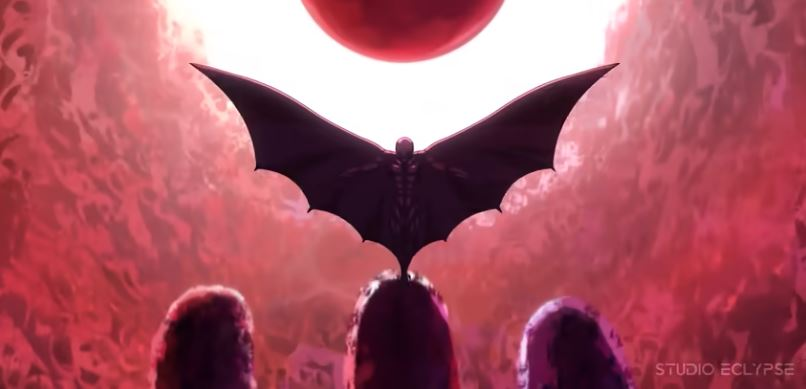

Nova animação de Beserker é anunciada!
O Studio Eclypse divulgou um novo trailer de Berserk: The Black Swordsman, animação que adaptará o arco do Espadachim Negro. Além disso, o projeto animado fanmade (realizado por fãs) recebeu uma janela de lançamento.
Na prévia, vemos Guts inicialmente preso a correntes, enquanto o inimigo se surpreende com a quantidade de armas que o protagonista carregava — "o suficiente para começar uma guerra por conta própria". Claro, o vídeo também antecipa tanto momentos intensos de ação quanto belos ambientes. De acordo com o Eclypse, o primeiro episódio de Berserk: The Black Swordsman está em pré-produção no momento em que essa matéria é escrita e deve ser lançado em algum momento do verão de 2025. Ou seja, a animação tem estreia planejada para alguma data entre junho e setembro do próximo ano.
A adaptação mais recente de Berserk para anime foi Berserk: Memorial Edition, lançada entre outubro e dezembro de 2022. A produção tem como base a trilogia de filmes que recontou o arco da Era de Ouro ( lançamentos de 2012 e 2013) e adicionou algumas novas cenas à montagem. Berserk é uma obra criada por Kentaro Miura, que faleceu em 2021. A continuação da jornada foi assumida por Kouji Mori (Holyland), um dos melhores amigos do autor original, e parte da equipe do Studio Gaga.
JOVEM NERD
Hunter x Hunter retorna com novo capítulo!
Vamos de notícia boa pra quem é rato de mangá? Hunter x Hunter finalmente está de volta, encerrando a pausa de quatro anos do quadrinho! O lançamento do novo capítulo ocorre ainda em outubro, no dia 24, antes do encadernado número 37, que chega em novembro.

A demora se deu, em parte, pelos problemas de saúde do mangaká Yoshihiro Togachi. O artista publica atualizações do trabalho em sua conta pessoal do Twitter. No Brasil, Hunter x Hunter é editado pela JBC. O novo volume ainda não tem data de lançamento.
JOVEM NERD